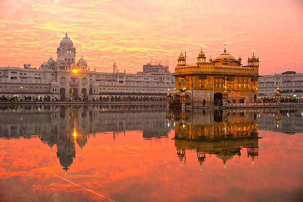
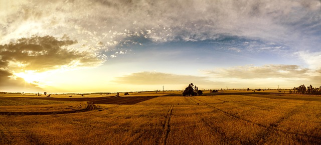
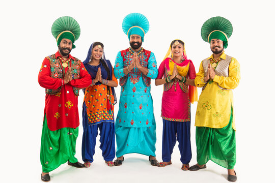
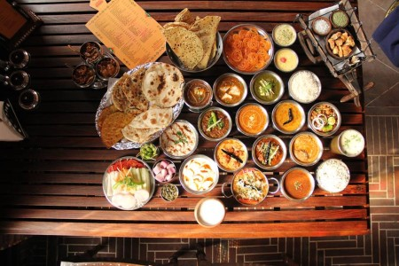
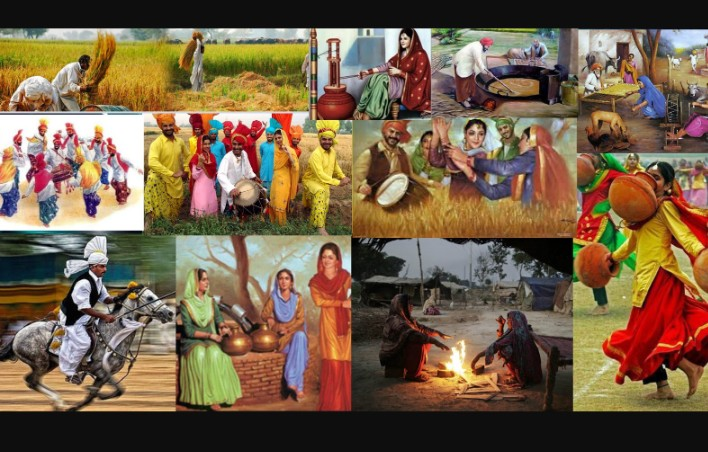

| ✧ Aspect | Information |
|---|---|
| ✧ Capital | Chandigarh |
| ✧ Chief minister | Charanjit Singh Channi |
| ✧ Largest City | Ludhiana |
| ✧ Districts | 22 |
| ✧ Official Language | Punjabi |
| ✧ Other Language | English, Hindi |
| ✧ Population | Approximately 27 million |
| ✧ Area | Approximately 50,362 square kilometers. |
| ✧ Major Rivers | Beas, Ravi, Sutlej, Chenab, and Jhelum. |
| ✧ Major Industries | agriculture (mainly wheat and rice), manufacturing (textiles, sports goods, electrical goods, etc.), and tourism. |
| ✧ Popular Place | Golden Temple in Amritsar, Wagah Border (Indo-Pak Border), Jallianwala Bagh, Anandpur Sahib, Chandigarh (the planned city serving as the capital), and Patiala (known for its forts and palaces). |
The traditional dress for Punjabi men is 'Punjabi Kurta' and 'Tehmat', especially the popular Muktsari style, which is being replaced by the kurta and pajama in the modern day Punjab. The traditional dress for women is the Punjabi Salwar Suit which replaced the traditional Punjabi Ghagra.
Punjab's history is a tapestry woven with threads of ancient civilizations, conquests, and cultural exchanges. Situated in the northwest region of the Indian subcontinent, Punjab has been a crossroads of various cultures and civilizations for millennia.
Ancient Punjab was home to the mighty Indus Valley Civilization, one of the world's oldest urban societies dating back to around 2500 BCE. The region witnessed the rise and fall of various empires, including the Maurya, Gupta, and Kushan dynasties, which left their imprint on its cultural landscape.
In the medieval period, Punjab became a gateway for invaders from Central Asia, including the Persians, Greeks, and later, the Mughals. The Mughal Empire, with its capital in Delhi, exerted significant influence over Punjab, fostering a synthesis of Persian, Indian, and Central Asian cultures.
The 18th century saw Punjab emerge as a powerful kingdom under the Sikh Empire, established by Maharaja Ranjit Singh. The Sikh Empire reached its zenith under his rule, extending from the Khyber Pass in the west to the outskirts of Delhi in the east. Ranjit Singh's secular policies and patronage of the arts and architecture contributed to a flourishing period of cultural and economic growth.
However, British expansionism in India led to the Anglo-Sikh Wars, resulting in the annexation of Punjab by the British East India Company in 1849. Punjab became the "Granary of India" under British rule, with extensive agricultural development and the introduction of modern infrastructure such as railways and irrigation canals.
Since independence, Punjab has experienced rapid economic growth, particularly in agriculture and industry. Despite facing challenges such as environmental degradation and political unrest, Punjab remains a vibrant region, celebrated for its rich cultural heritage, hospitality, and resilience.




